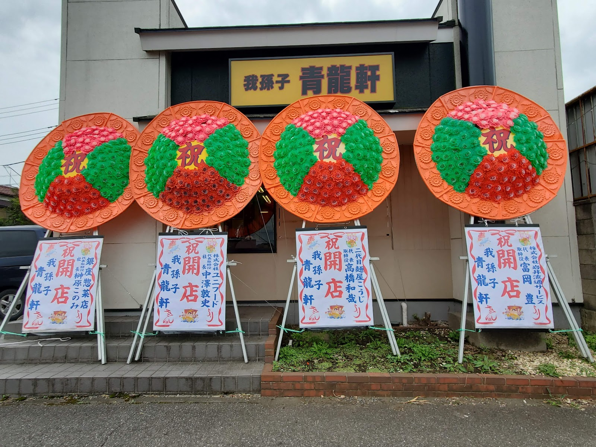
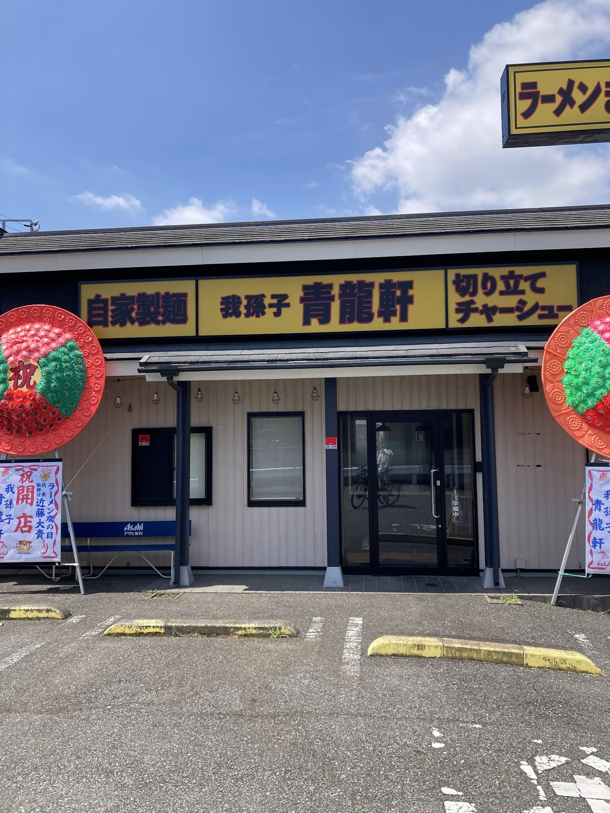
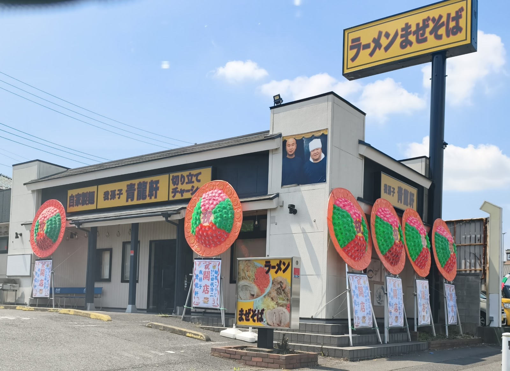
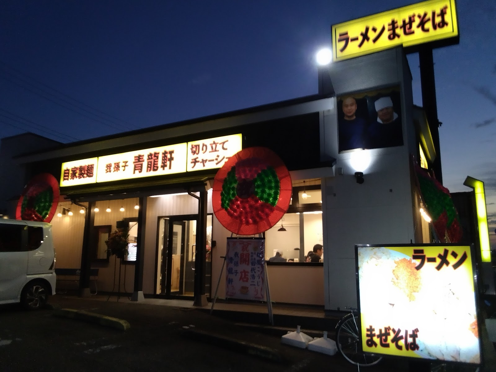

ギャラリー
Googleマップに投稿された写真で、お店の様子をご覧いただけます。
掲載している写真は、Googleマップに投稿されたユーザー投稿写真です。各写真の下部に、投稿してくださった方のお名前（Googleアカウントの表示名）を記載しています。

開店を祝う花が店頭に並んだ、オープン当初の外観です。
投稿者: ゆうたろう
厚切りチャーシューがのった、丼一杯のラーメンです。
投稿者: ツチヤケンジ（ジャイ）

「自家製麺」の文字が掲げられた店舗外観です。
投稿者: 茶虎猫

「ラーメン」「まぜそば」の看板が見える、昼間の店構えです。
投稿者: an chan

明かりが灯った、夕暮れどきの店舗外観です。
投稿者: ツチヤケンジ（ジャイ）

麺とチャーシューを間近でとらえた、ラーメンのクローズアップです。
投稿者: 茶虎猫